遊びで植物を育てよう
2024/06/28
ムクゲが開花中です。
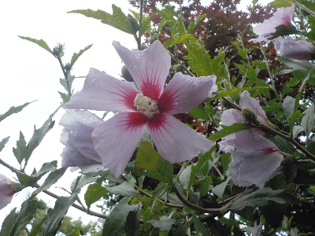
地植えの大きいものは咲きましたが、鉢植えのものはまだ咲く気配がありません。
鉢が小さいとダメなのかな。小さいサイズで咲いて欲しいんだけどな。
【ムクゲTOP】
【木TOP】
【園芸TOP】
2024/05/29
ムクゲに青虫がいました。
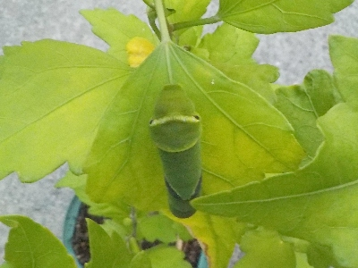
葉っぱは食べられてないです。なんでここにいるんでしょう。
ただの移動中かな。
【ムクゲTOP】
【木TOP】
【園芸TOP】
2022/08/30
実生のムクゲに初めて花が咲きました。
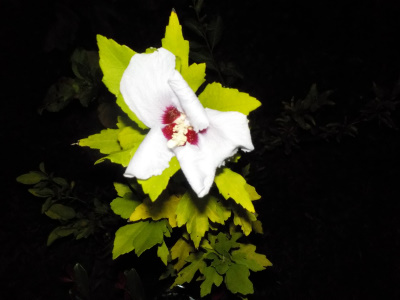
2019年に採取した種が2022年に咲きました。
うれしかったので夜ですが写真を撮りました。
実生なので親木とは違う花が咲くかも？と期待していたんですが、同じ花でした。まあ、こんなもんでしょう。
【ムクゲTOP】
【木TOP】
【園芸TOP】
2021/09/26
ムクゲの害虫被害
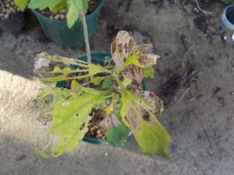
気付いたら葉っぱが食べられていました。
大きい木は食べられる感じがしないんですが、小さいムクゲはよく食べられている気がします。
【ムクゲTOP】 【木TOP】 【園芸TOP】
2021/08/13
ムクゲの鉢に龍の髭を植えました。
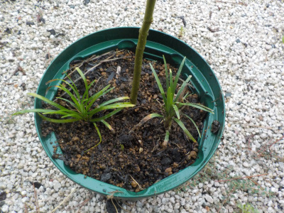
実生のムクゲはまだ花が咲く感じがしないです。
棒のような木が1本立ってるだけで寂しいので、グランドカバーに龍の髭を植えました。
【ムクゲTOP】 【木TOP】 【園芸TOP】
2021/06/20
ムクゲが何かの幼虫に食べられていました。
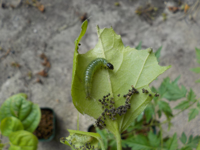
何の幼虫でしょうね。
検索したらワタノメイガって蛾の幼虫にたどり着きました。
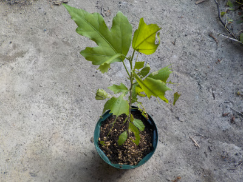
虫食いになってなんかかわいそうなので、鉢を大きくしました。
これで成長しやすくなるでしょう。
【ムクゲTOP】 【木TOP】 【園芸TOP】
2020/09/27
秋になってムクゲの花が減りました。
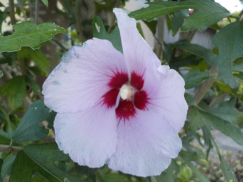
もう時期が終わりそうです。
花の写真を撮っていなかったので記念に撮りました。
種を育てているムクゲの親木はこんな感じです。
【ムクゲTOP】 【木TOP】 【園芸TOP】
2020/04/12
ムクゲを土に植え替えしました。
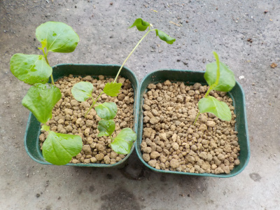
お茶パックで育てていたムクゲが窮屈そうだったので、植え替えしました。
【ムクゲTOP】 【木TOP】 【園芸TOP】
2020/03/14
ムクゲを屋外での水耕栽培にしました。
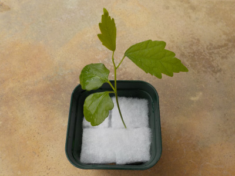
ムクゲを1本屋外に出しました。
寒さと日差しに勝てるかな？
そもそも水耕栽培で育つかわからないですけど。
【ムクゲTOP】 【木TOP】 【園芸TOP】
2020/02/11
ムクゲがすくすく大きくなっています。
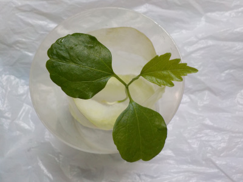
順調に背が伸びています。
今10cmくらい。
【ムクゲTOP】 【木TOP】 【園芸TOP】
2020/01/26
ムクゲが次々発芽しています。

あんまり沢山あっても育てれないので、これでもう十分です。
発芽率高かったです。
【ムクゲTOP】 【木TOP】 【園芸TOP】
2020/01/11
ムクゲが次々発根しています。
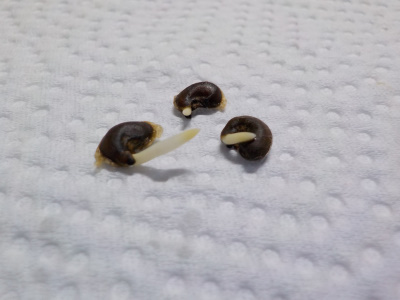
同じ環境で育てていますが、根が出るタイミングはそれぞれのようです。
【ムクゲTOP】 【木TOP】 【園芸TOP】
2019/12/28
ムクゲの根っこが出ました。
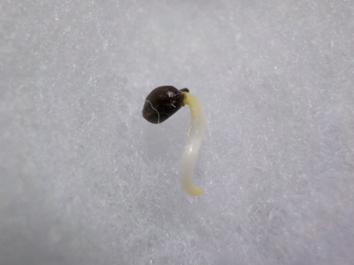
一個だけ根っこが出ました。
湿ったキッチンペーパーからウールマットに移動させました。
【ムクゲTOP】 【木TOP】 【園芸TOP】
2019/12/01
ムクゲの種を採りました。

庭木から種を採りました。
とりあえず濡れたキッチンペーパーで包んで保存します。
【ムクゲTOP】
【木TOP】
【園芸TOP】
種から木を育てます。
【おいしいものを食べよう。】【しっかり寝よう。】
【ソロ活をしよう!】【季節感のあることをしよう。】【動画視聴はほどほどに。】【当サイトの全てのコンテンツは無断転載禁止です。】